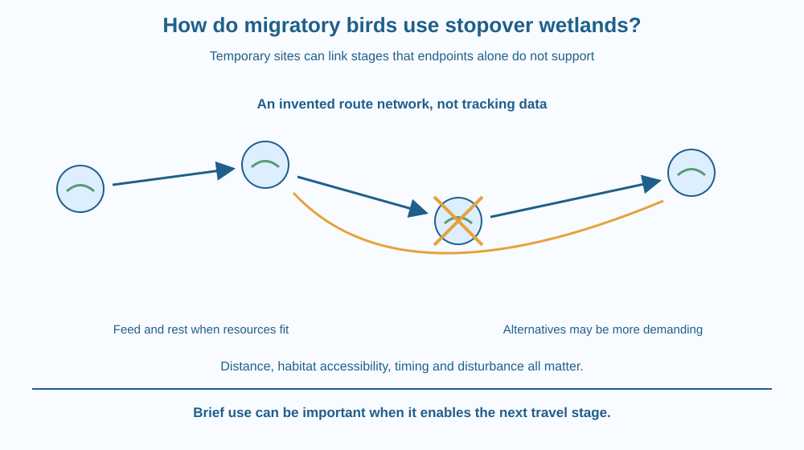

Explain how a stopover wetland can support part of a migratory journey. Connect refuelling, resting and a network of suitable sites. Distinguish the role of a stopover from a permanent home, and recognise why protecting only the final destination may leave a journey incomplete.
A wetland hosts birds for a short period, then many depart. Someone says the site cannot matter much because the birds do not stay all year. The conclusion misses the role of a temporary stopping place.
A long journey can depend on several locations used only briefly. At a stopover, suitable birds may feed, rest and rebuild reserves before moving on. Losing one useful link can alter the demands on the next part of the journey.
The important unit is therefore not just one destination but a connected route through changing conditions.
Migration is a regular movement between regions associated with seasonal needs and opportunities. Bird species differ greatly: some travel far, some make shorter movements and some remain resident. The lesson concerns migratory waterbirds that use wetlands, not every bird.
A stopover is a place used during travel rather than simply the final seasonal destination. It can provide feeding opportunities, rest and other resources needed before the next stage. Its value depends on timing and the species using it.
Flying requires energy, and birds can use stored reserves during demanding movements. At a suitable stopover, feeding can replenish those reserves. We do not repeat the earlier cellular energy mechanism; the focus is where resources are available along the route.
Food availability depends on habitat conditions. Water depth, exposed mud, vegetation and seasonal biological activity can influence what different birds can reach. A wetland containing water is not automatically equally useful to every species or at every moment.
Timing matters because a site must offer resources when the birds arrive. A wetland suitable months earlier may not provide the same conditions during passage. Changes in rainfall, water management and disturbance can alter that match.
Resting space and disturbance also matter. Repeated interruption can reduce opportunities to feed or rest. Unlike the earlier nesting lesson, the management target here is supporting birds in transit, not protecting a nest and its eggs at the same site.
A route can be modelled as a network of sites and travel links. The loss of a site may require a longer movement or use of an alternative with different resources. The effect depends on whether suitable alternatives exist; not every site loss produces the same outcome.
Protecting the final breeding or nonbreeding destination alone may therefore be insufficient. Journey support can require several regions and coordinated management. A map should show seasonal use and uncertainty instead of treating every drawn wetland as an interchangeable fuel station.
Draw a journey as a chain of sites rather than one arrow between two endpoints. Put a reserve bar beside a model bird, reduce it along a travel segment and increase it at a suitable feeding stop.
The bar is a conceptual energy account, not a measured body-fat record. Its role is to connect travel demand with opportunities to replenish resources.
Now remove one site and test alternatives. A longer link may be more demanding, and a nearby site may not offer the same food or resting conditions. This model shows why distance alone does not describe network quality and why temporary use can still be essential.
The SVG shows a simplified migration route with several wetland nodes. Separate symbols identify travel, feeding and resting. One missing node creates a longer alternative link.
A resource bar beside each stage represents changing reserves qualitatively. No species, flight distance or refuelling rate is assigned, so the drawing cannot be mistaken for measured tracking data.
Labels distinguish stopover function from final destination and emphasise timing. The illustration is a network model, not an official migration map or a claim that every migratory bird uses wetlands in the same sequence.

Wetlands in India can form part of wider movements of waterbirds. A site visited briefly during passage can therefore have a different but still important role from a place used for months.
School observations should use approved routes and distant viewing. A group should never approach birds closely to test whether they are tired or force them to move for a photograph. The educational record can note habitat and use without disturbing the travellers.
A local wetland project benefits from asking when a site is used and what resources it offers. Counting only the number of permanent residents would miss temporary visitors whose needs connect the place to a wider landscape.
Use paper, a pencil and four or five site symbols. No wildlife visit or food provision is needed.
The symbols and distances are invented. Do not turn the route into a claim about a particular species without tracking or observational evidence. The exercise tests network reasoning, not an actual bird's energy budget or safe maximum flight distance.
A replacement wetland lies close to the lost site but has unsuitable water depth for the model bird's feeding method. Why might geographical closeness fail to make it a useful substitute?
Now imagine a wetland with good food but repeated disturbance. Separate the presence of resources from the bird's opportunity to use them. This distinction helps explain why habitat quality is more than the number of water bodies on a map.
What is a stopover site?
Answer: C — Stopovers support travel stages rather than necessarily serving as final destinations.
Why does timing affect stopover usefulness?
Answer: A — A suitable site must match the travellers needs during their actual passage.
A nearby replacement has food the model bird cannot reach. What follows?
Answer: B — Habitat accessibility and resources matter as well as location.
Design a paper conservation map that includes destinations, stopovers and timing notes. Identify a site whose loss creates a difficult link and propose what information would be needed before calling an alternative suitable.
Your map must avoid invented species-specific distances and must distinguish nesting protection from transit support. End with an observation that could be made from an approved distant viewpoint without approaching or feeding the birds.
A place can matter because of what it allows an animal to do next. A brief stop can connect two regions that would otherwise be harder to move between. Conservation value therefore need not be proportional to how many months an individual remains in one location.
Stopover wetlands can support feeding and rest during migration; a useful route depends on suitable sites being available at the right time.